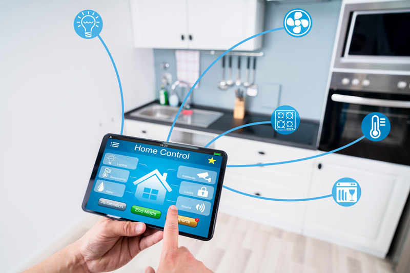
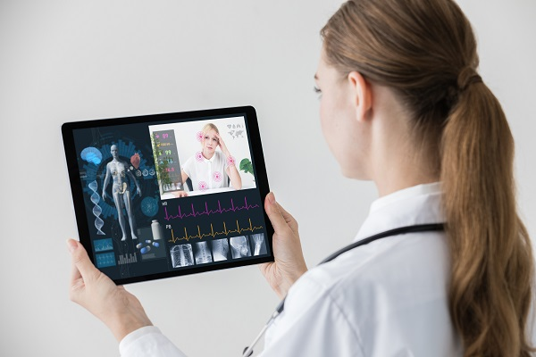
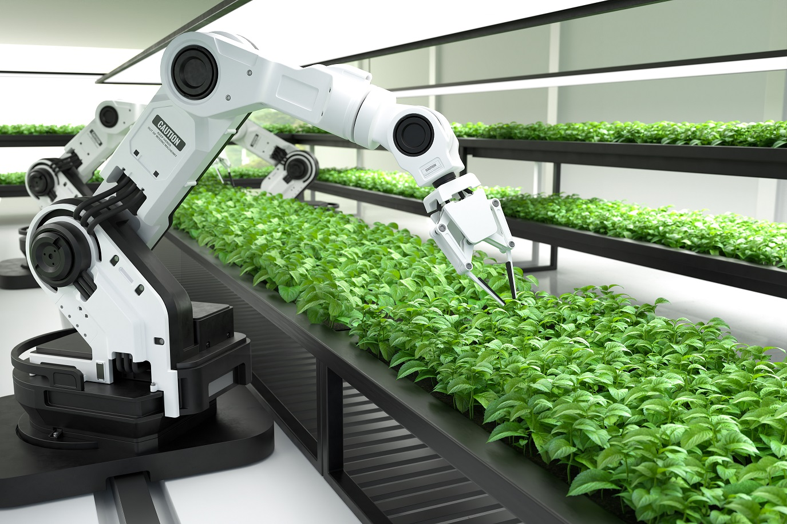
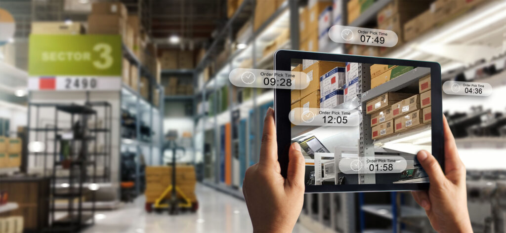
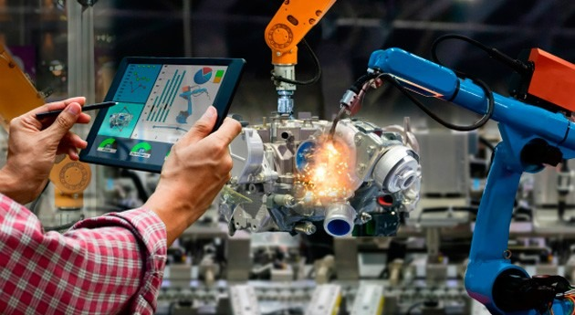
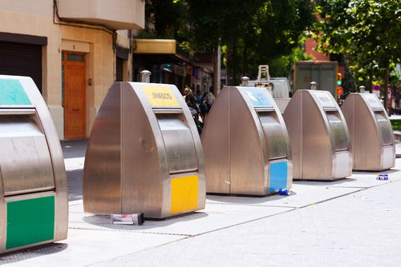
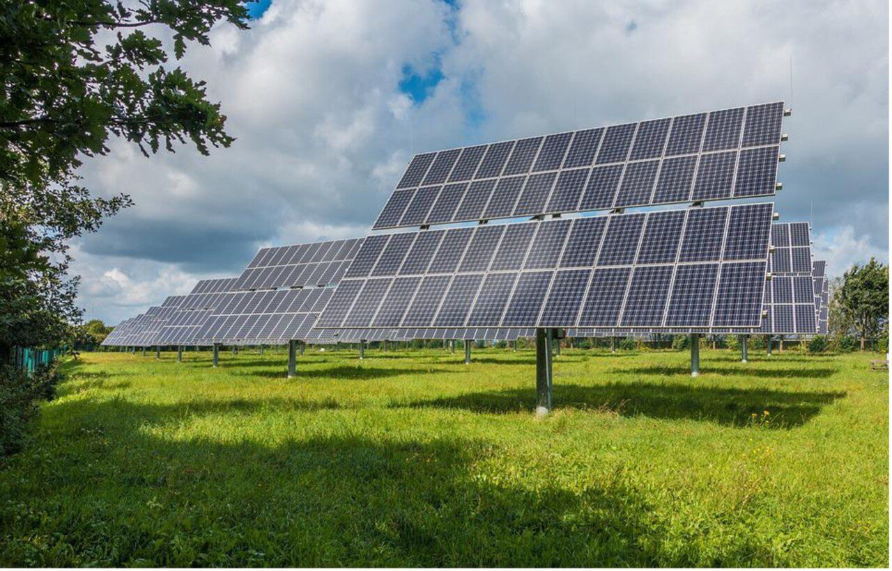
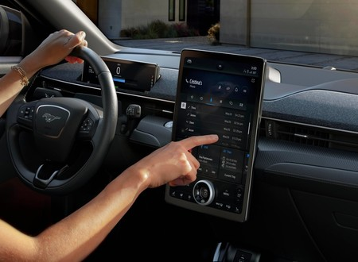

El IoT y el Desarrollo de Software ha revolucionado la forma en que
interactuamos con el mundo digital y físico. Esta red de dispositivos conectados a través de Internet ha abierto nuevas
posibilidades en una variedad de industrias, desde la gestión de la energía hasta la atención médica y la manufactura.
Uno de los componentes clave en el corazón de la El IoT es el desarrollo
de software. A continuación, exploraremos algunas de las aplicaciones más destacadas de la
IoT y su relación con el desarrollo de software.

- Hogar Inteligente: Los dispositivos IoT, como termostatos,
cámaras de seguridad, luces y electrodomésticos conectados, permiten a los usuarios controlar y automatizar sus hogares.
El desarrollo de software proporciona aplicaciones y plataformas que permiten la gestión centralizada de estos dispositivos.

- Salud y Bienestar:Dispositivos portátiles, monitores de salud y sensores médicos
IoT permiten el seguimiento y la gestión de la salud personal. Aplicaciones
de salud proporcionan información en tiempo real y análisis de datos para pacientes y profesionales de la salud.
- Ciudades Inteligentes:Las ciudades están adoptando la IoT para
mejorar la gestión del tráfico, la recolección de basura, la iluminación pública y otros servicios urbanos. El desarrollo de software
es esencial para la integración y la gestión de datos de sensores distribuidos en toda la ciudad.

- Agricultura de Precisión:Los agricultores utilizan sensores IoT
para monitorear y optimizar el riego, la fertilización y la salud de los cultivos. El software de análisis de datos agrícolas ayuda a
tomar decisiones informadas.

- Logística y Cadena de Suministro:La IoT se utiliza para rastrear
mercancías, activos y vehículos en tiempo real. Las aplicaciones y el software de seguimiento permiten la optimización de la logística
y la gestión de inventario.

- Industria 4.0:En la fabricación y la industria, la IoT impulsa la
automatización y la monitorización de procesos. El desarrollo de software proporciona sistemas de control y análisis de datos para mejorar
la eficiencia y la calidad de la producción.

- Medio Ambiente:Los sensores IoT se utilizan para la monitorización de la
calidad del aire, el agua y la gestión de residuos. Las aplicaciones ayudan a recopilar y analizar datos ambientales.

- Energía y Gestión de Recursos:La IoT se emplea para la monitorización y
la gestión eficiente del consumo de energía y recursos, como electricidad y agua. El software permite el análisis y la toma de decisiones
basadas en datos en tiempo real.

- Vehículos Conectados:Los automóviles conectados están equipados con sensores IoT
que recopilan datos sobre el rendimiento y la seguridad. El desarrollo de software en el ámbito de los vehículos conectados abarca desde sistemas
de infoentretenimiento hasta sistemas avanzados de asistencia al conductor.
La IoT no sería posible sin el desarrollo de software robusto y versátil. Los sensores y dispositivos
que componen la IoT recopilan datos en tiempo real y los envían a través de la red para su procesamiento
y análisis. Aquí es donde el desarrollo de software desempeña un papel esencial. Las aplicaciones y plataformas de software permiten la gestión de datos,
la automatización de procesos y la toma de decisiones basadas en datos, lo que hace que la IoT sea útil
en una variedad de aplicaciones.